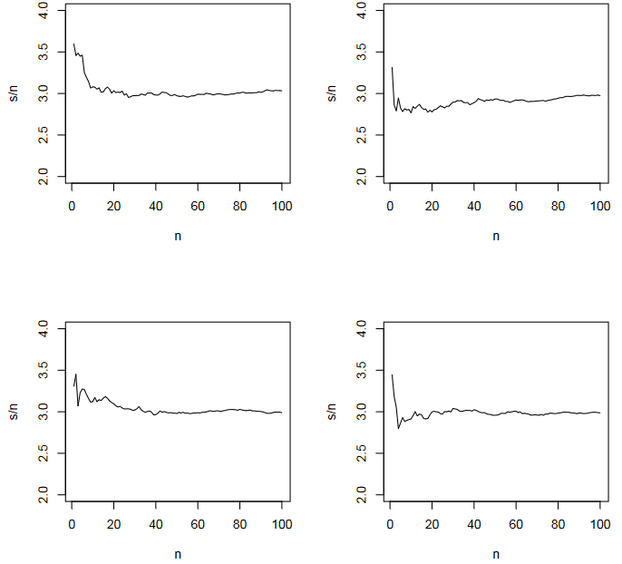

The Weak Law of Large Numbers states that as the sample size of a random variable increases, the sample mean converges in probability to the population mean.
Mathematically, for a sequence of random variables X₁, X₂, X₃, ..., which are i.i.d. (independent and identically distributed) with a finite mean (μ) and variance (σ²), the weak law can be expressed as:
For any ε > 0:
lim(n → ∞) P(|(X̄n - μ)| < ε) = 1
The proof of the Weak Law of Large Numbers is based on Chebyshev's inequality and properties of expectations and variances. Let's outline the key steps of the proof:
P(|X - E[X]| ≥ ε) ≤ Var(X) / ε²
P(|X̄n - μ| ≥ ε) ≤ Var(X̄n) / ε²
Var(X̄n) = Var(X) / n
P(|X̄n - μ| ≥ ε) ≤ Var(X) / (nε²)
lim(n → ∞) P(|X̄n - μ| ≥ ε) = 0
Thus, the Weak Law of Large Numbers is proved, showing that as n increases, the probability of X̄n being close to μ approaches 1.
The Strong Law of Large Numbers is a stronger version of the law, stating that the sample mean converges almost surely to the population mean as the sample size increases.
Mathematically, for the same sequence of i.i.d. random variables X₁, X₂, X₃, ..., the strong law can be expressed as:
P(lim(n → ∞) X̄n = μ) = 1
The proof of the Strong Law of Large Numbers is more intricate and typically involves advanced probability theory and measure theory. The key concept in this proof is the Borel-Cantelli lemmas and Kolmogorov's zero-one law. Here's a simplified outline:
Aₙ = {lim(n → ∞) X̄n = μ}
If Σ P(Aₙ) < ∞, then P(lim Aₙ) = 0
This step involves using Kolmogorov's zero-one law, and it requires detailed probability theory.
Since Σ P(Aₙ) < ∞, it implies that lim Aₙ = μ almost surely.
These laws are fundamental in probability theory and statistics, providing the theoretical basis for the reliability of sample means as estimators of population means.
We can simulate babies’ weights with independent normal random variables, mean 3 kg and standard deviation 0.5 kg. The following R commands perform this simulation and computes a running average of the heights.
> n<-c(1:100)
> x<-rnorm(100,3,0.5)
> s<-cumsum(x)
> plot(s/n,xlab="n",ylim=c(2,4),type="l")
